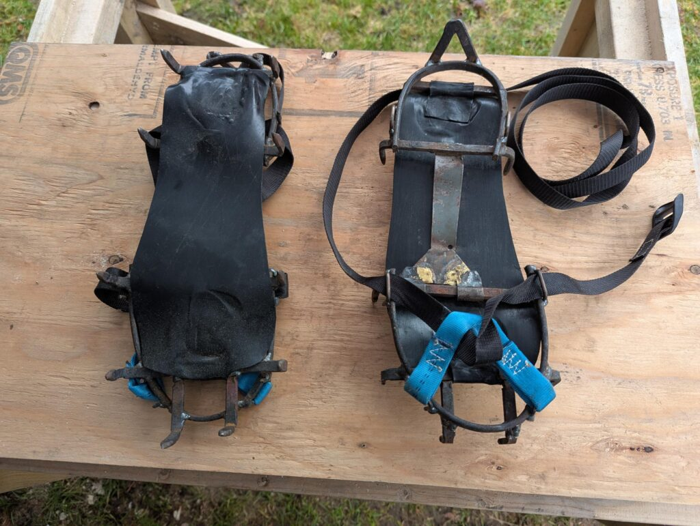
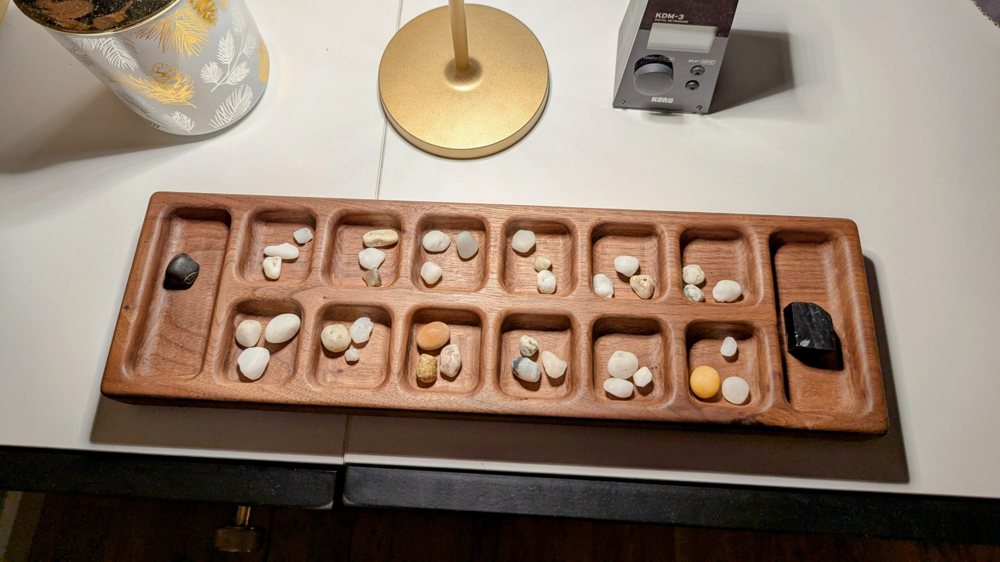

OK Stuv
OK Stuv is a group of people who do and make stuff. OK Stuv was founded (?) in the 1990s when we needed a good name for the stuff we did. We weren't aiming for perfection, it was just OK stuff, so we called it OK Stuv.
What do we make?
- Outdoor stuv
- Videography
- Bend Film Festival entries
- Yikes Bikes
- Gadgets
- homemade drones
- cross-bows
- homemade sawmill feat. VW minibus flywheel pulleys
- slime
- Commercial products
- OK Stuv BMW e30 Keyless Entry Kits — installation manual
- Greenworks weedwacker bump knob (eBay)
- Services: Phantom 2 Vision drone repair
Games:
-

January 31, 2025Replay: OK Stuv Crampons
Flashback to a late-90s OK Stuv original product — custom crampons built with a MIG welder, scrap steel, and webbing for icy Adirondack hiking.
-

December 15, 2024Walnut Mancala
A mancala board evolved over a few months from a rough 2×4 prototype to a finished piece cut from a chunk of walnut.